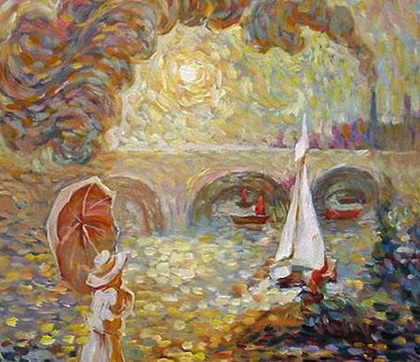

Что вы видите на картинке?
- Дама с зонтом
- Кудрявый мужчина
- Дым из трубы
- Парусник
Зонт от солнца — как символ царственности и королевской грации. Так же зонт является символом связи между небом и землей, это значит, что вы хотите себя защитить от этого мира, людей, общества, но вы открыты для неба. Для вам небо как пространство для отдыха и творчества.
Символ какой-то хитрости, задумки, осуществление которой должно способствовать достижению желанной цели. Главное не перестараться, что бы цель не потеряла свою ценность. Так же вас ждут интересные перемены. По итогу, вы обретете силу и изворотливость.
Дым символизирует душу, покинувшую тело. Вы слишком заняты своими делами, что ваша душа требует покоя и отдыха. Она хочет на море, на прогулку, на пару дней спокойствия. Она кричит вам. Прислушайтесь.
Благосостояние, плывущее в ваш дом. Вы — человек далеко идущий, с большими планами и с четкими целями. Главное что бы ваш корабль не потонул от перегрузки, берегите себя, свое здоровье. Проводите больше времени с семьей и родными, не отправляйтесь на долгое плавание.